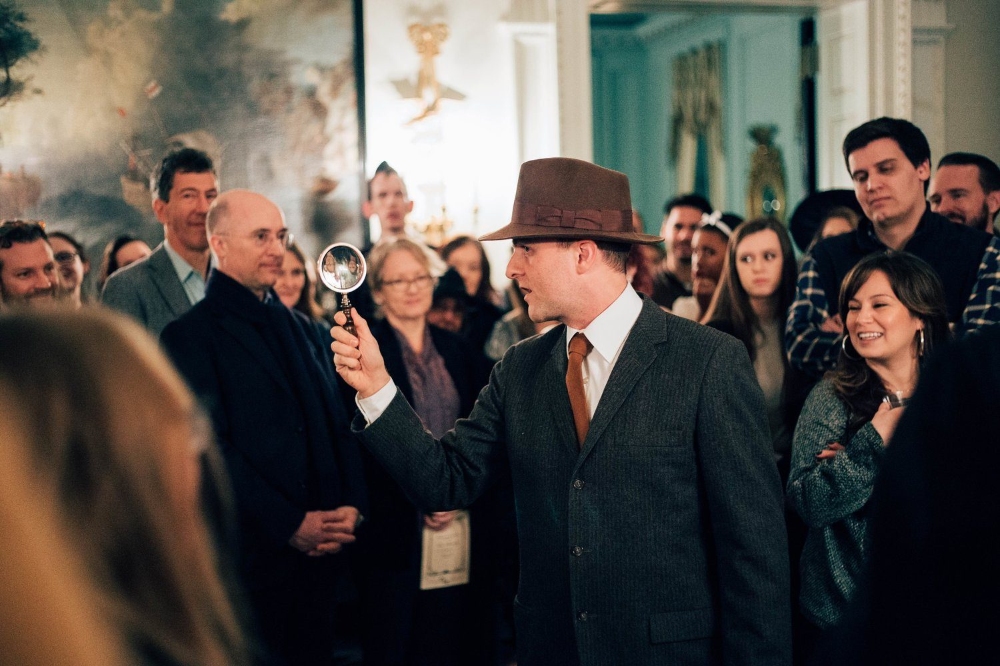
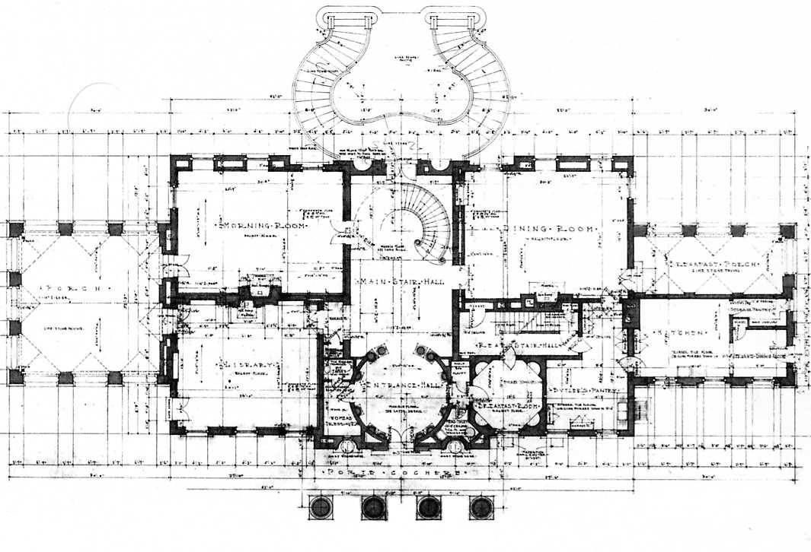
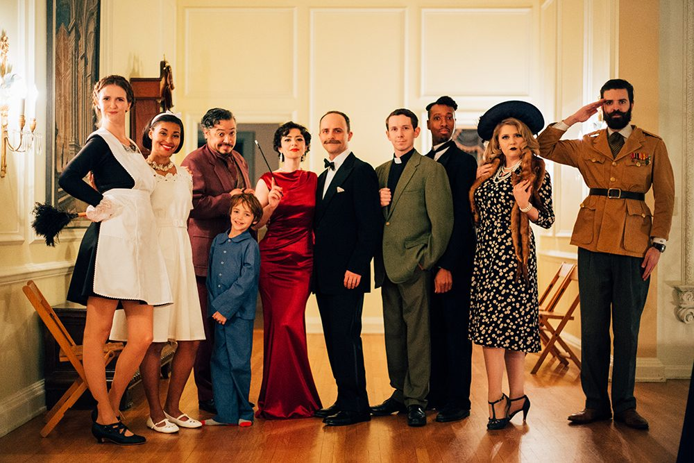
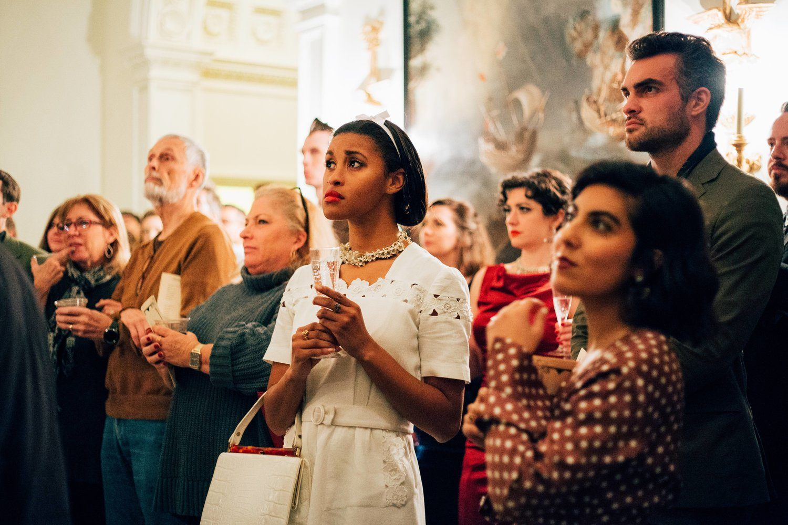
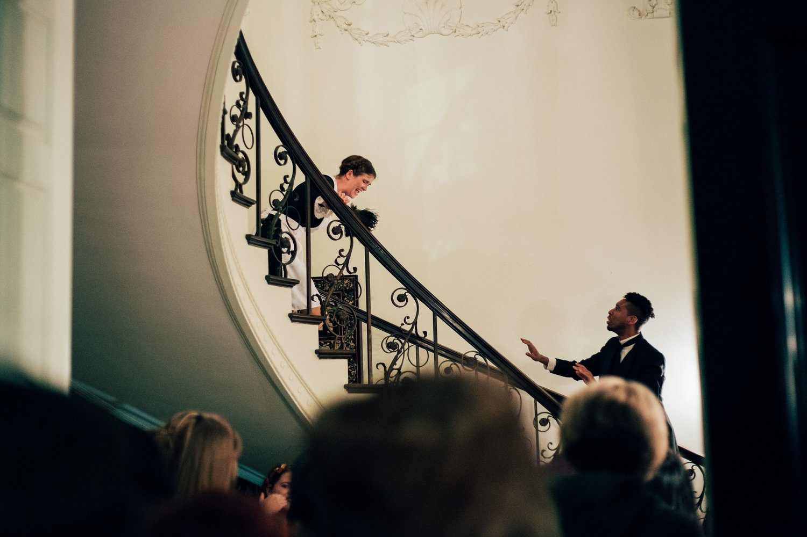
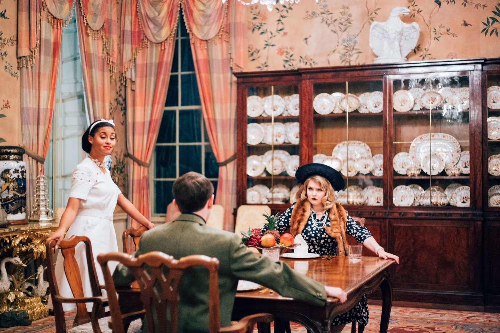
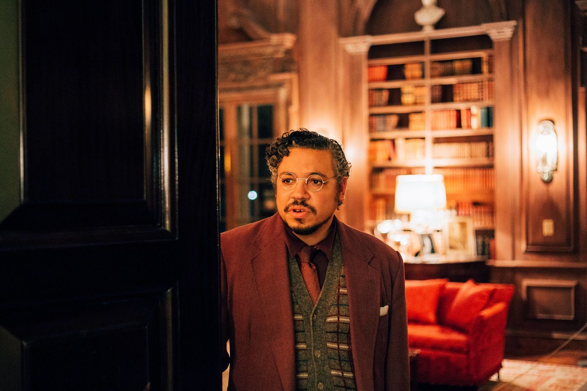
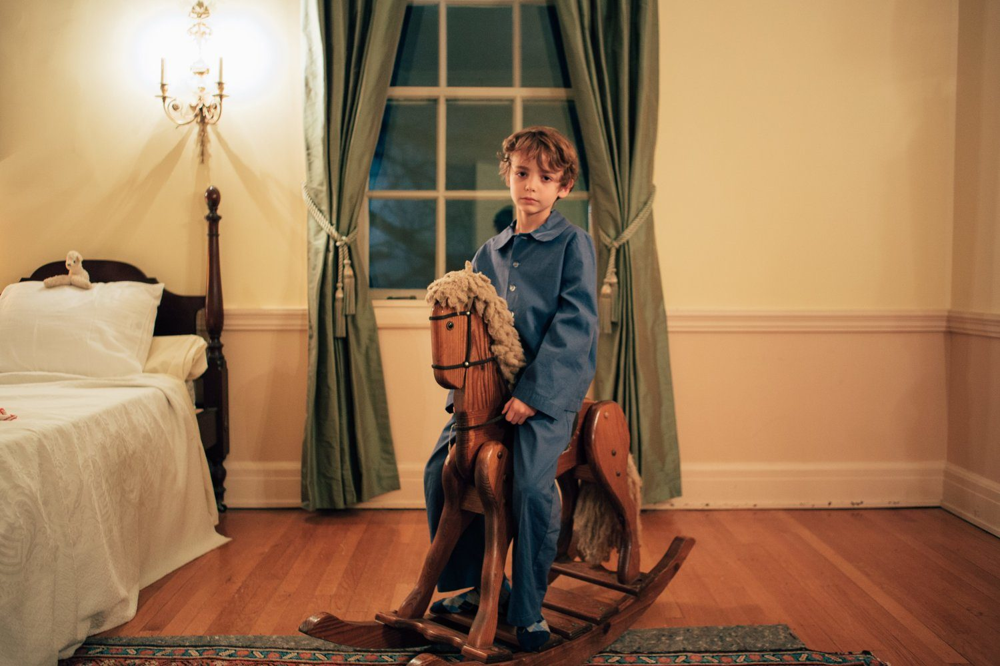

Immersive & Experiential / Case Study
CLUE at Swan House
A beloved whodunnit turned loose in an historic Atlanta estate — site-specific, fast-moving, and tuned so every guest got a chance to feel clever.
01 — Overview
Take a story everyone knows, put it in a house nobody’s allowed to touch, and move the audience through it room by room. What could possibly go wrong? (Plenty. That’s what rehearsal is for.)
Staging a familiar mystery inside an historic estate means the venue is a character — and a constraint. Every scene had to work with the architecture, the preservation rules, and an audience that moves through the story on foot.

02 — What I owned
Assistant direction, with a guest-flow brain
- 1Pacing & movement. Helping tune how scenes, audiences, and cast flow through the rooms — keeping the narratives tight while multiple groups migrated through an historic house.
- 2Participation design. Designing and documenting the movement options — cast and guests flowing through multiple paths and rooms, so people could choose whom to follow — setting boundaries subtle enough to keep the spell and clear enough to keep the antiques safe, and going through the script with a fine-toothed comb so every possible puzzle path made sense in every possible variation.
- 3Rehearsal to run. Supporting the director through rehearsals, tech, and performance adjustments once real audiences started behaving like real audiences.
- 4Site logistics. Collaborating on the practical puzzle — transitions, timing, and sightlines — that site-specific work demands.







03 — Reflection
Site-specific work teaches you that constraints aren’t the enemy of an experience — they’re the shape of it. The house decided half our blocking; our job was making the other half feel inevitable. It’s the same muscle I use fitting a design into an existing product: respect the architecture, then make it sing.